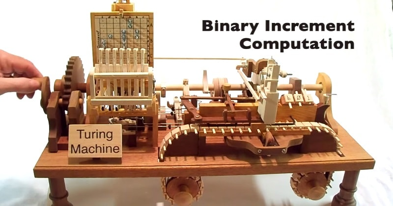
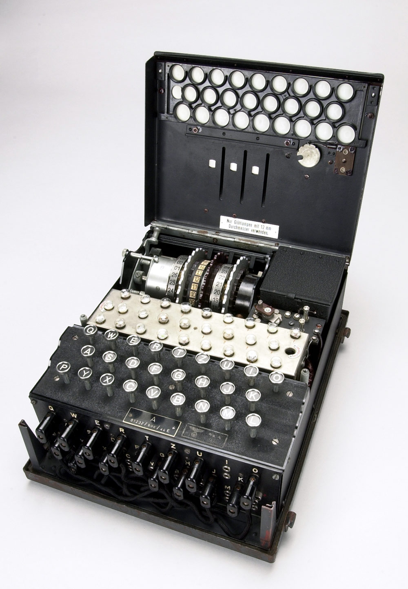

Mathématicien anglais, Alan Turing a anticipé la programmation des premiers ordinateurs avec sa "machine de Turing". Durant la Seconde Guerre mondiale, il a décrypté la machine allemande Enigma.
Biographie courte d'Alan Turing
Né le 23 juin 1912 à Paddington, Alan Mathison Turing est un célèbre mathématicien anglais. Élève surdoué et précoce, son génie est vite repéré par ses proches et ses professeurs : il aurait appris à lire seul en trois semaines. Sa passion pour les études est même couverte par la presse, le jeune garçon de 13 ans ayant parcouru 90 km à vélo pour rejoindre son école un jour de grève générale. Passionné de sciences et de mathématiques, Alan Turing se décide à se lancer dans cette voie lorsqu’un de ses amis, Christopher Morcom, un brillant étudiant en sciences, meurt de la tuberculose bovine. Il veut ainsi lui rendre hommage.
Travaux d’Alan Turing
Les travaux qu’Alan Turing réalise à l’université, jusqu’en 1938, sont aujourd'hui devenus des références en matière de science informatique. Visionnaire, il est le créateur de la "Machine de Turing", une expérience de pensée et de concepts de programmations qui prendront corps avec la création des ordinateurs, quelques années plus tard. Lors de la Seconde Guerre mondiale, Alan Turing est engagé pour faire des recherches sur les cryptographies de la machine nazie Enigma, recherches qu’il mène avec succès. Après la guerre, le scientifique travaille sur les premiers modèles d’ordinateur appelés Manchester Mark I. Alan Turing soulève ensuite les passions en exposant sa théorie sur l’intelligence artificielle. Il publie "Can a machine think ?". Dans cet ouvrage, il présente sa philosophie de la "machine intelligente". Il définit celle-ci par un test resté célèbre, le test de Turing, qui simule une conversation entre un homme et une machine. En 1951, il est admis à la Royal Society et l'année suivante, Alan Turing crée un programme de jeu d'échecs, mais aucune machine n'est assez puissante pour le lire !
La machine de Turing
Le 28 mai 1936, Alan Turing propose dans un article intitulé "On Computable Numbers, with an Application to the Entscheidungsproblem" un concept qui permet à une machine d'interpréter un code et donc d'effectuer des calculs de type différents. Ce qu'on appelle la "machine de Turing" n'est alors qu'un modèle théorique précurseur de l'informatique et non une réalisation complète. Cette application visionnaire sera la base du développement informatique et du fonctionnement par algorithme. Le premier ordinateur programmable ne sera construit qu'au cours de la Seconde Guerre mondiale et nommé "Colossus".

Enigma décryptée par Alan Turing
Dès 1938, Alan Turing est recruté par le gouvernement britannique et se spécialise dans la cryptanalyse. Au sein des services secrets, le scientifique est chargé de déchiffrer la machine Enigma utilisée par l'armée allemande. Sa mission et celle de son équipe est d'améliorer la "Bombe", une machine polonaise qui permet de tester rapidement différentes combinaisons, afin d'obtenir les clés de décodage. Classé secret militaire sous le nom d'Opération Ultra, ce n'est que récemment que le rôle d'Alan Turing durant la Seconde Guerre mondiale a été dévoilé. Certains avancent d'ailleurs le fait qu'Alan Turing en décodant Enigma aurait permis de gagner deux ans sur la fin de la guerre.

Mort d'Alan Turing
En 1952, Alan Turing est victime d'un cambriolage. L'enquête de police relie cette affaire à un ancien amant du scientifique. Son homosexualité est alors incriminée et lui vaut d'être condamné à la castration chimique pendant un an. Son corps et son mental subissent d'importants changements durant cette période. En 1953, après avoir suivi ce lourd traitement, il reprend ses travaux scientifiques, mais se suicide par empoisonnement le 7 juin 1954 à Wilmslow. Selon la thèse officielle, Alan Turing a commencé à manger une pomme imbibée de cyanure. Certains y voient un symbole, le logo de l'entreprise Apple. D'autres membres de son entourage, restent persuadés que sa mort est un accident lié à une négligence, Turing utilisant le cyanure pour ses expériences.
Un film retrace la vie d'Alan Turing
Depuis les années 2000 et la révélation du rôle d'Alan Turing durant la Seconde Guerre mondiale, les hommages destinés au scientifique se multiplient. Ainsi, en 2014, le réalisateur norvégien Morten Tyldum conçoit le film Imitation Game avec Benedict Cumberbatch dans le rôle d'Alan Turing. D'autres films, mais aussi des pièces de théâtre et des ouvrages divers saluent l'incroyable vie d'Alan Turing.